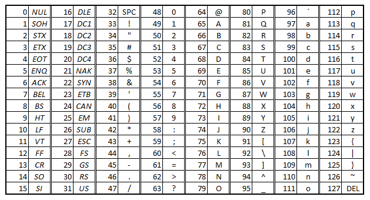

capitolo 3
indice
paragrafo 1: la codifica delle informazioni
1. immagini
|
immagine
|
risoluzione
|
bit
|
occupazione memoria
|
|
B/N
|
1024*740
|
1
|
1024*740*1 bit
|
|
grigio
|
1024*740
|
8
|
1024*740*8 bit
|
|
radio
|
1024*740
|
16
|
1024*740*16 bit
|
|
colore (RGB)
|
1024*740
|
24
|
1024*740*24 bit
|
|
colore AQ
|
1024*740
|
48
|
1024*740*48 bit
|
8 bit = budge
16 bit = word
32 bit = double word
64 bit = quod word
Una codifica di caratteri consiste in un codice che associa un insieme di caratteri
ad un insieme di altri oggetti, come numeri (specialmente nell'informatica), con lo scopo
di facilitare la memorizzazione di un testo in un computer.
occ = occupazione: risoluzione * profondita´
occ 1=1 bit
occ 2=occ 1:2 10 = 1 bite
occ 3=occ 2:2 10 = 1 kilobite
occ 4=occ 3:2 10 = 1 megabite
occ 5=occ 4:2 10 = 1 gigabite
tecnica vettoriale:
ricopri un´immagine di forme geometrice, indicando le coordinate cartesiane dei singoli
vertici e centri.
la tabella ascii:

La tabella ASCII (acronimo di American Standard Code for Information Interchange, "codice standard americano per lo scambio
di informazioni") contiene lettere, numeri, caratteri di controllo e altri simboli.
Ad ogni carattere viene assegnato un codice da 7 bit.
2. video
i video sono tante immagini ce si susseguono una subito dopo l´altra,
circa 30 immagini al secondo.
occV1 = 1024 * 740 * 48 * 30 * 1800
V1 = video 1
1024 = risoluzione
740 = profondita´
48 = bit
30 = FPS (fotogrammi per secondo).
1800 = tempo in secondi
paragrafo 2: la codifica dei numeri
- nimeri naturali (N, sono < di 0);
- numeri relativi (Z, sono i numeri positivi e negativi);
- numeri reali (R, sono i numeri positivi, negativi e decimali).
La codifica dei numeri è il modo in cui i numeri vengono rappresentati utilizzando simboli o sequenze di simboli in un determinato sistema.
Esistono diversi sistemi di codifica numerica, ognuno con regole specifiche per rappresentare i numeri:
Tipi di codifica dei numeri:
Codifica decimale (base 10)
- Il sistema che usiamo nella vita quotidiana, basato su 10 cifre (0-9).
- Esempio: 123 in decimale significa 1×10*2+2×10*1+3×10*0 = 100+20+3 = 123
Codifica binaria (base 2)
- Utilizzata nei computer, composta solo da 0 e 1.
- Esempio: il numero decimale 5 è 101 in binario (1×2*2+0×2*1+1×2*0 = 4+0+1 = 5).
Codifica esadecimale (base 16)
- Usata in informatica per rappresentare grandi numeri in modo compatto.
- Utilizza cifre da 0 a 9 e lettere da A a F (dove A=10, B=11, C=12, D=13, E=14, F=15).
- Esempio: il numero decimale 255 è FF in esadecimale (15×15 = 225).